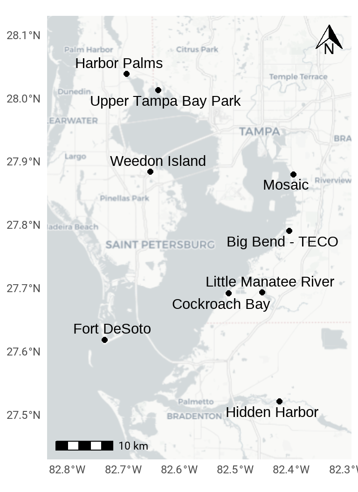

BH-8
Continue and enhance habitat mapping and monitoring programs
OBJECTIVES:
Expand habitat mapping and monitoring programs to assess extent and quality of bay habitats, including seagrass, benthic, hard-bottom, emergent coastal and associated upland habitats. Assess new technologies as they become available. Assess the need for additional monitoring of effects of emerging contaminants on benthic habitats and increased monitoring in tidal tributaries.
STATUS:
Ongoing. Action is revised to recognize the evolving role of emerging technologies for habitat assessment (including remote sensing, sonar and digital imagery). Action also assesses the need for additional monitoring and laboratory analyses for emerging benthic contaminants, and monitoring needed to improve understanding of ecological function and stressors in tidal tributaries and river systems.
BACKGROUND:
Substantial progress has been made to map and monitor bay habitats to inform habitat restoration and protection targets (see Action BH-1). The Habitat Master Plan (2020 Update) incorporates restoration and protection targets for critical habitat types in Tampa Bay (Robison et al. 2020).
Robison, D., T. Ries, J. Saarinen, D. Tomasko, and and C. Sciarrino. 2020. “Tampa Bay Estuary Program: 2020 Habitat Master Plan Update.” 07-20. St. Petersburg, Florida: Tampa Bay Estuary Program. https://drive.google.com/file/d/1Hp0l_qtbxp1JxKJoGatdyuANSzQrpL0I/view?usp=drivesdk.

The Southwest Florida Water Management District (SWFWMD) continues to map seagrass acreage every two years using aerial photography, while local government partners have helped ground-truth seagrass quality at selected transects throughout the bay since 1988 and 1998, respectively. Seagrass communities are vulnerable to environmental variability (such as heavy rainfall events) and human impacts (such as boat propellers and groundings). After reaching a historic peak of 41,655 acres in 2016, the bay had only 30,137acres of seagrasses in 2022, a significant decrease of 11,518 acres even though water quality standards were met in all bay segments except Old Tampa Bay. Continued biennial mapping of baywide seagrass coverage is necessary to identify and prioritize affected areas.
Mapping and monitoring of tidal flats and oyster communities began in 2012 as part of seagrass aerial surveys conducted by SWFWMD. Beginning in 2015, new standards for interpreting oyster reefs and tidal flats from aerial photography were instituted for greater accuracy. New survey techniques, such as sidescan sonar and underwater video, are being used to map hard bottom habitats (see Action BH-4).

The Environmental Protection Commission of Hillsborough County (EPCHC) coordinates benthic monitoring of animals living on or in bay bottom sediments and chemical conditions, with participation from Manatee and Pinellas Counties. Benthic monitoring has been ongoing since 1993 with over 1500 samples analyzed. Overall, benthic conditions in the bay are considered “Fair” to “Poor” over the last 25 years, with “Good” conditions in Middle and Lower Tampa Bay in many years. There is continued need for benthic monitoring in Tampa Bay, especially in hot spots of contamination (see Action COC-1). Other recommendations include expanding laboratory analysis of sediment contaminants to include new or emerging compounds which may impact benthic habitats, such as microplastics, PFAS, pharmaceuticals and personal care products (see Action COC-4), and increasing monitoring efforts in the major river systems and minor tidal tributaries (see Action BH-9).
Coastal marshes and mangrove forests have been mapped and quantified using traditional photointerpretation techniques, allowing restoration targets to be established. However, new approaches and techniques to capture large- and small-scale changes are required, especially for understanding and mitigating the effects of climate change. Several new monitoring techniques designed to detect small-scale changes resulting from climate change and sea level rise (SLR) are being tested and compared for effectiveness and cost-saving as part of the Critical Coastal Habitat Assessment initiated in 2014 (see Action CC-1). Large-scale habitat changes could be detected using new automated digital aerial or satellite imagery processing techniques currently in development. If these techniques prove to be accurate, precise and cost-effective, high resolution aerial imagery currently being collected by SWFWMD could yield detailed habitat maps. Combined with digital elevation data, they could help assess the fate of low-lying areas and identify opportunities to restore or purchase land so habitats can migrate landward in response to SLR.
Changes in freshwater wetland habitat were mapped for the entire Tampa Bay watershed using land cover map products derived from aerial imagery taken in 1950 and 2020. Maps were analyzed to compare the change in quantity and quality of wetland habitat over time. These data were used to help set restoration and protection targets in the Habitat Master Plan (2020 Update) (see Action BH-1).
In the Tampa Bay watershed, coastal uplands are important buffers between sensitive tidal wetlands and urban and agricultural development. Ongoing mapping of coastal upland habitats is necessary to assess development pressures and update targets and goals. A comprehensive mapping program for invasive plants does not exist, although various agencies maintain some location-specific information about invasive plants on their environmental lands. These local data could be augmented via citizen science using mobile devices.